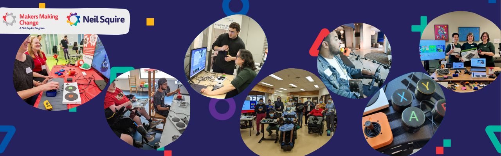

Welcome to GAME Resources

What is this Resource?
Welcome! This resource is a collection of the Makers Making Change, a program of Neil Squire, adaptive gaming resources. Intended for both or GAME Checkpoint community or anyone in the world interested in learning more about assistive technology in gaming. This resource assumes you are already familiar with the disability of someone else you are working with or you are reading this to learn about the assistive technology out there that you can use.
Link: Makers Making Change site

Link: Neil Squire site
Your Pathway to Play
This guide provides a structured approach to understanding the assistive technology in adaptive gaming, from initial hardware selection to real-world implementation.
Step 1: Adaptive Gaming Equipment
Understand the physical tools and software settings used to bridge the gap between a player and the game.
- Get an Overview of all the assistive technology options in gaming.
- Alternative Access: If standard controllers do not work for the player they could try using assistive switches, joysticks, voice control, facial expressions, eye control, and more.
- Controller Modifications: 3D printed and commercial modifications for a traditional controller
- Software Features: In-game accessibility and 3rd party applications for accessibility in games.
Step 2: Video Game Basics
Learn how to match a player's physical range of motion to the specific digital demands of a game.
- How to Find Games with Accessibility: Evaluating games based on the needs of the gamer.
- Video Game Literacy: New to gaming and don't know where to start?
Step 3: Best Practices
Recommended practices that we have developed or learned from other experts ensure a successful assessment and long-term setup.
- Session Walkthrough: A guide for walking through the before, during, and after an adaptive gaming session.
- Tips and Tricks: Recommendations that we often make for common requests such as one handed gaming, helpful considerations, and more.
Step 4: GAME Profiles
Review real-world case studies to see how all of the above sections are integrated for individual players.
- Gamer Profiles: Detailed equipment setups for various needs.
Additional Resources
Outside of the detailed resources above, we have a few additional tools for our GAME Checkpoints and pages on where to get support if you are an individual looking for gaming support or an organization looking to implement an adaptive gaming program.
Access Questionnaires your clients can fill out before sessions, The base equipment list for a GAME Checkpoint centre, Marketing Materials, and Templates to help you document game accessibility and more.
Find support. Look at organizations to help you on your adaptive gaming journey
Download all of the adaptive gaming information in "Learn About Adaptive Gaming".
Why Adaptive Gaming Matters
Gaming is the largest entertainment industry in the world, providing a vital space for entertainment, careers, and community. However, accessibility challenges often remain a barrier to full participation.
For the 31% of gamers who live with a disability, adaptive gaming is life-changing:
- Social Connection: It reduces isolation by connecting players to a global community.
- Independence: It increases autonomy through digital participation as well as familiarty with assistive technology that can be used for digital access.
- Rehabilitation: It can be used to gamify physical and cognitive therapy sessions.
Makers Making Change works to ensure the disability community can fully participate by providing open-source assistive technology at about one-tenth the cost of similar commercial devices.
Makers Making Change - GAME Program Overview
Makers Making Change is leading Canada’s accessible gaming efforts. We’re supporting gamers, makerspaces, clinical centres, and game developers along their adaptive gaming journey. On this page you will find information around our low cost open source gaming assistive technology, resources on accessible gaming basics, R&D developments, and community initiatives.
The GAME Checkpoints program is one of our main initiatives that was created o help organizations build accessible gaming spaces that fit their community. Many centres told us they wanted to support gamers with disabilities but needed guidance on equipment, setup, and training. Since 2022, we have worked with clinics, community hubs, schools, and game developers to create welcoming spaces where gamers with disabilities can explore adaptive gaming and find the equipment that works best for them.
Link: Visit the GAME Checkpoints Webpage
Scan to watch: Adaptive Gaming Overview Video
This resource is intended to be a resource guide and source of useful materials for the GAME Checkpoints as well as individuals looking for more information on adaptive gaming. If you are a GAME Checkpoint leader looking for specific tools, check out the GAME Checkpoint specific resouces on this site.
Want to learn more about this program or request a device?
Copyright © 2026 Neil Squire / Makers Making Change. Content is licensed under the CC BY SA 4.0 License. This website is built with MKDocs. MKDocs is MIT-licensed software and is not covered by the CC BY-SA license applied to this site's content.
Visit Makers Making Change